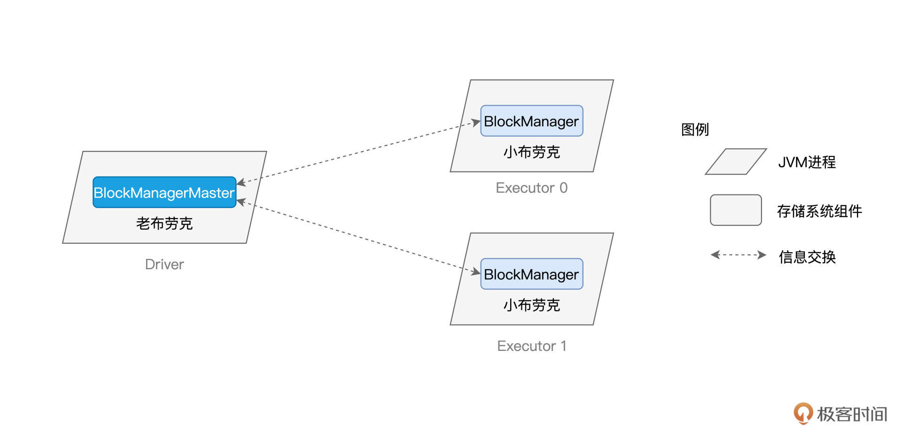
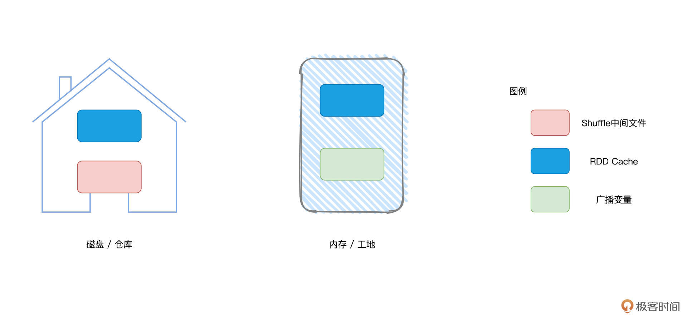
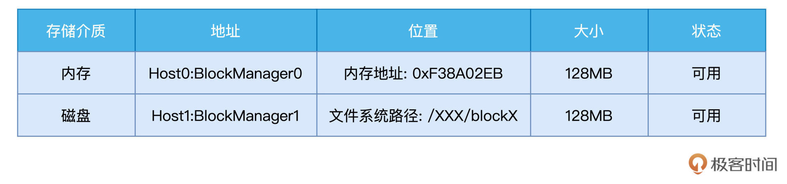
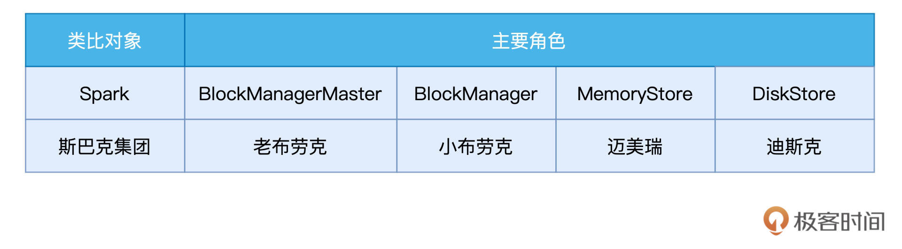
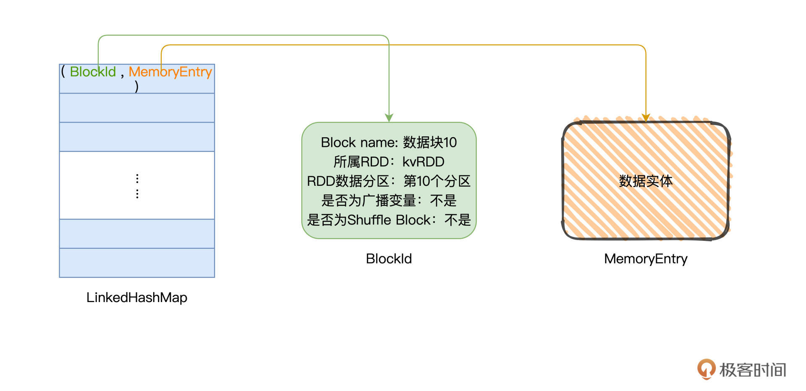
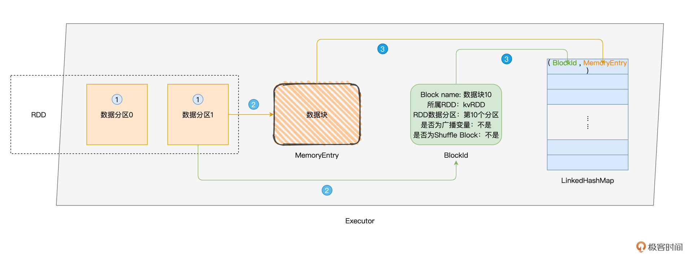
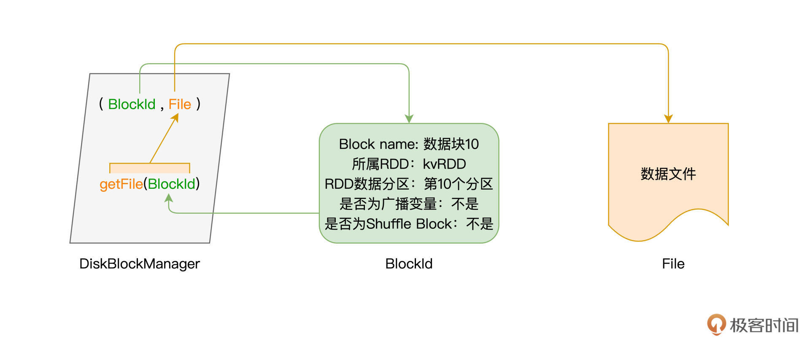
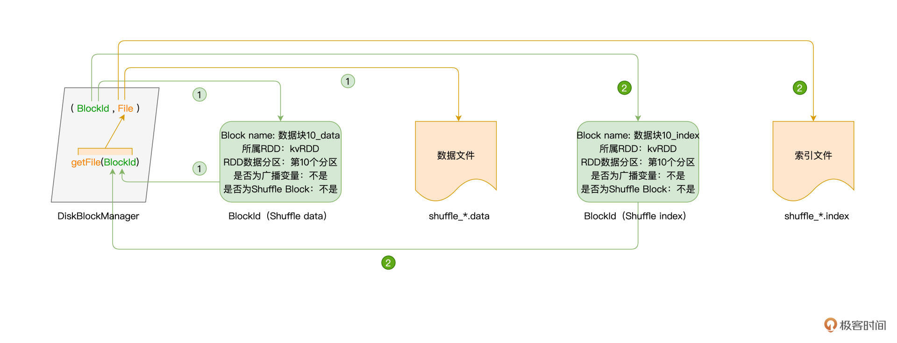
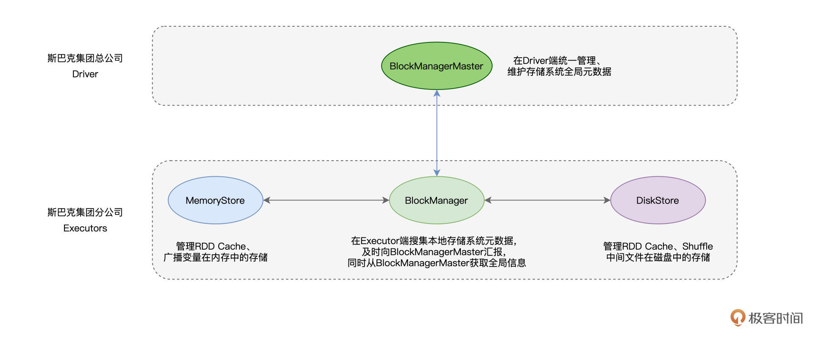

- 00 开篇词 入门Spark，你需要学会“三步走”.md.html
- 01 Spark：从“大数据的Hello World”开始.md.html
- 02 RDD与编程模型：延迟计算是怎么回事？.md.html
- 03 RDD常用算子（一）：RDD内部的数据转换.md.html
- 04 进程模型与分布式部署：分布式计算是怎么回事？.md.html
- 05 调度系统：如何把握分布式计算的精髓？.md.html
- 06 Shuffle管理：为什么Shuffle是性能瓶颈？.md.html
- 07 RDD常用算子（二）：Spark如何实现数据聚合？.md.html
- 08 内存管理：Spark如何使用内存？.md.html
- 09 RDD常用算子（三）：数据的准备、重分布与持久化.md.html
- 10 广播变量 & 累加器：共享变量是用来做什么的？.md.html
- 11 存储系统：数据到底都存哪儿了？.md.html
- 12 基础配置详解：哪些参数会影响应用程序稳定性？.md.html
- 13 Spark SQL：让我们从“小汽车摇号分析”开始.md.html
- 14 台前幕后：DataFrame与Spark SQL的由来.md.html
- 15 数据源与数据格式：DataFrame从何而来？.md.html
- 16 数据转换：如何在DataFrame之上做数据处理？.md.html
- 17 数据关联：不同的关联形式与实现机制该怎么选？.md.html
- 18 数据关联优化：都有哪些Join策略，开发者该如何取舍？.md.html
- 19 配置项详解：哪些参数会影响应用程序执行性能？.md.html
- 20 Hive + Spark强强联合：分布式数仓的不二之选.md.html
- 21 Spark UI（上）：如何高效地定位性能问题？.md.html
- 22 Spark UI（下）：如何高效地定位性能问题？.md.html
- 23 Spark MLlib：从“房价预测”开始.md.html
- 24 特征工程（上）：有哪些常用的特征处理函数？.md.html
- 25 特征工程（下）：有哪些常用的特征处理函数？.md.html
- 26 模型训练（上）：决策树系列算法详解.md.html
- 27 模型训练（中）：回归、分类和聚类算法详解.md.html
- 28 模型训练（下）：协同过滤与频繁项集算法详解.md.html
- 29 Spark MLlib Pipeline：高效开发机器学习应用.md.html
- 30 Structured Streaming：从“流动的Word Count”开始.md.html
- 31 新一代流处理框架：Batch mode和Continuous mode哪家强？.md.html
- 32 Window操作&Watermark：流处理引擎提供了哪些优秀机制？.md.html
- 33 流计算中的数据关联：流与流、流与批.md.html
- 34 Spark + Kafka：流计算中的“万金油”.md.html
- 用户故事 小王：保持空杯心态，不做井底之蛙.md.html
- 结束语 进入时间裂缝，持续学习.md.html
- 捐赠
11 存储系统：数据到底都存哪儿了？
你好，我是吴磊。
感谢你在国庆假期仍然坚持学习，今天这一讲，我们来学习存储系统，与调度系统一样，它也是Spark重要的基础设施之一。不过，你可能会好奇：“掌握Spark应用开发，需要去了解这么底层的知识吗？”坦白地说，还真需要，为什么这么说呢？
我们前面学了Shuffle管理、RDD Cache和广播变量，这些功能与特性，对Spark作业的执行性能有着至关重要的影响。而想要实现这些功能，底层的支撑系统正是Spark存储系统。
学习和熟悉存储系统，不单单是为了完善我们的知识体系，它还能直接帮你更好地利用RDD Cache和广播变量这些特性。在未来，这些知识也能为你做Shuffle的调优奠定良好的基础。
既然存储系统这么重要，那要怎样高效快速地掌握它呢？本着学以致用的原则，我们需要先了解系统的服务对象，说白了就是存储系统是用来存什么东西的。
服务对象
笼统地说，Spark存储系统负责维护所有暂存在内存与磁盘中的数据，这些数据包括Shuffle中间文件、RDD Cache以及广播变量。
对于上述三类数据，我们并不陌生。我们先回顾一下什么是Shuffle中间文件，在Shuffle的计算过程中，Map Task在Shuffle Write阶段生产data与index文件。接下来，根据index文件提供的分区索引，Shuffle Read阶段的Reduce Task从不同节点拉取属于自己的分区数据。而Shuffle中间文件，指的正是两个阶段为了完成数据交换所仰仗的data与index文件。
RDD Cache指的是分布式数据集在内存或是磁盘中的物化，它往往有利于提升计算效率。广播变量[上一讲]我们刚刚介绍过，它的优势在于以Executors为粒度分发共享变量，从而大幅削减数据分发引入的网络与存储开销。
我们刚才对这三类数据做了简单回顾，如果你觉得哪里不是特别清楚的话，不妨翻回前面几讲再看一看，我们在第7、8、10这3讲分别对它们做了详细讲解。好啦，了解了存储系统服务的主要对象以后，接下来，我们来细数Spark存储系统都有哪些重要组件，看看它们之间又是如何协作的。
存储系统的构成
理论的学习总是枯燥而又乏味，为了让你更加轻松地掌握存储系统的核心组件，咱们不妨还是用斯巴克国际建筑集团的类比，来讲解Spark存储系统。
相比调度系统复杂的人事关系（戴格、塔斯克、拜肯德），存储系统的人员构成要简单得多。在内存管理[那一讲]，我们把节点内存看作是施工工地，而把节点磁盘看作是临时仓库，那么显然，管理数据存储的组件，就可以看成是仓库管理员，简称库管。
布劳克家族
在斯巴克建筑集团，库管这个关键角色，一直以来都是由布劳克家族把持着。
布劳克家族在斯巴克集团的地位举足轻重，老布劳克（BlockManagerMaster）坐镇集团总公司（Driver），而他的子嗣们、小布劳克（BlockManager）则驻守在各个分公司（Executors）。
对集团公司建材与仓库的整体情况，老布劳克了如指掌，当然，这一切要归功于他众多的子嗣们。各家分公司的小布劳克，争先恐后地向老爸汇报分公司的建材状态与仓库状况。关于他们的父子关系，我整理到了下面的示意图中。

从上图我们能够看得出来，小布劳克与老布劳克之间的信息交换是双向的。不难发现，布劳克家族的家风是典型的“家长制”和“一言堂”。如果小布劳克需要获取其他分公司的状态，他必须要通过老布劳克才能拿到这些信息。
在前面的几讲中，我们把建材比作是分布式数据集，那么，BlockManagerMaster与BlockManager之间交换的信息，实际上就是Executors之上数据的状态。说到这里，你可能会问：“既然BlockManagerMaster的信息都来自于BlockManager，那么BlockManager又是从哪里获取到这些信息的呢？”要回答这个问题，我们还要从BlockManager的职责说起。
我们开头说过，存储系统的服务对象有3个：分别是Shuffle中间文件、RDD Cache以及广播变量，而BlockManager的职责，正是在Executors中管理这3类数据的存储、读写与收发。就存储介质来说，这3类数据所消耗的硬件资源各不相同。
具体来说，Shuffle中间文件消耗的是节点磁盘，而广播变量主要占用节点的内存空间，RDD Cache则是“脚踏两条船”，既可以消耗内存，也可以消耗磁盘。

不管是在内存、还是在磁盘，这些数据都是以数据块（Blocks）为粒度进行存取与访问的。数据块的概念与RDD数据分区（Partitions）是一致的，在RDD的上下文中，说到数据划分的粒度，我们往往把一份数据称作“数据分区”。而在存储系统的上下文中，对于细分的一份数据，我们称之为数据块。
有了数据块的概念，我们就可以进一步细化BlockManager的职责。BlockManager的核心职责，在于管理数据块的元数据（Meta data），这些元数据记录并维护数据块的地址、位置、尺寸以及状态。为了让你直观地感受一下元数据，我把它的样例放到了下面的示意图里，你可以看一看。

只有借助元数据，BlockManager才有可能高效地完成数据的存与取、收与发。这就回答了前面我提出的问题，BlockManager与数据状态有关的所有信息，全部来自于元数据的管理。那么接下来的问题是，结合这些元数据，BlockManager如何完成数据的存取呢？
不管是工地上，还是仓库里，这些场所都是尘土飞扬、人来人往，像存取建材这种事情，养尊处优的小布劳克自然不会亲力亲为。于是，他招募了两个帮手，来帮他打理这些脏活累活。
这两个帮手也都不是外人，一个是大表姐迈美瑞（MemoryStore），另一个是大表哥迪斯克（DiskStore）。顾名思义，MemoryStore负责内存中的数据存取，而相应地，DiskStore则负责磁盘中的数据访问。
好啦，到此为止，存储系统的重要角色已经悉数登场，我把他们整理到了下面的表格中。接下来，我们以RDD Cache和Shuffle中间文件的存取为例，分别说一说迈美瑞和迪斯克是如何帮助小布劳克来打理数据的。

MemoryStore：内存数据访问
大表姐迈美瑞秀外慧中，做起事情来井井有条。为了不辜负小布劳克的托付，迈美瑞随身携带着一本小册子，这本小册子密密麻麻，记满了关于数据块的详细信息。这个小册子，是一种特别的数据结构：LinkedHashMap[BlockId, MemoryEntry]。顾名思义，LinkedHashMap是一种Map，其中键值对的Key是BlockId，Value是MemoryEntry。

BlockId用于标记Block的身份，需要注意的是，BlockId不是一个仅仅记录Id的字符串，而是一种记录Block元信息的数据结构。BlockId这个数据结构记录的信息非常丰富，包括Block名字、所属RDD、Block对应的RDD数据分区、是否为广播变量、是否为Shuffle Block，等等。
MemoryEntry是对象，它用于承载数据实体，数据实体可以是某个RDD的数据分区，也可以是广播变量。存储在LinkedHashMap当中的MemoryEntry，相当于是通往数据实体的地址。
不难发现，BlockId和MemoryEntry一起，就像是居民户口簿一样，完整地记录了存取某个数据块所需的所有元信息，相当于“居民姓名”、“所属派出所”、“家庭住址”等信息。基于这些元信息，我们就可以像“查户口”一样，有的放矢、精准定向地对数据块进行存取访问。
val rdd: RDD[_] = _
rdd.cache
rdd.count
以RDD Cache为例，当我们使用上述代码创建RDD缓存的时候，Spark会在后台帮我们做如下3件事情，这个过程我把它整理到了下面的示意图中，你可以看一看。
- 以数据分区为粒度，计算RDD执行结果，生成对应的数据块；
- 将数据块封装到MemoryEntry，同时创建数据块元数据BlockId；
- 将（BlockId，MemoryEntry）键值对添加到“小册子”LinkedHashMap。

随着RDD Cache过程的推进，LinkedHashMap当中的元素会越积越多，当迈美瑞的小册子完成记录的时候，Spark就可以通过册子上的“户口簿”来访问每一个数据块，从而实现对RDD Cache的读取与访问。
DiskStore：磁盘数据访问
说完大表姐，接下来，我们再来说说大表哥迪斯克。迪斯克的主要职责，是通过维护数据块与磁盘文件的对应关系，实现磁盘数据的存取访问。相比大表姐的一丝不苟、亲力亲为，迪斯克要“鸡贼”得多，他跟布劳克一样，都是甩手掌柜。
看到大表姐没日没夜地盯着自己的“小册子”，迪斯克可不想无脑地给布劳克卖命，于是他招募了一个帮手：DiskBlockManager，来帮他维护元数据。
有了DiskBlockManager这个帮手给他打理各种杂事，迪斯克这个家伙就可以哼着小曲、喝着咖啡，坐在仓库门口接待来来往往的施工工人就好了。这些工人有的存货，有的取货，但不论是干什么的，迪斯克会统一把他们打发到DiskBlockManager那里去，让DiskBlockManager告诉他们货物都存在哪些货架的第几层。

帮手DiskBlockManager是类对象，它的getFile方法以BlockId为参数，返回磁盘文件。换句话说，给定数据块，要想知道它存在了哪个磁盘文件，需要调用getFile方法得到答案。有了数据块与文件之间的映射关系，我们就可以轻松地完成磁盘中的数据访问。
以Shuffle为例，在Shuffle Write阶段，每个Task都会生成一份中间文件，每一份中间文件都包括带有data后缀的数据文件，以及带着index后缀的索引文件。那么对于每一份文件来说，我们都可以通过DiskBlockManager的getFile方法，来获取到对应的磁盘文件，如下图所示。

可以看到，获取data文件与获取index文件的流程是完全一致的，他们都是使用BlockId来调用getFile方法，从而完成数据访问。
重点回顾
今天这一讲，我们重点讲解了Spark存储系统。关于存储系统，你首先需要知道是，RDD Cache、Shuffle中间文件与广播变量这三类数据，是存储系统最主要的服务对象。
接着，我们介绍了存储系统的核心组件，它们是坐落在Driver端的BlockManagerMaster，以及“驻守”在Executors的BlockManager、MemoryStore和DiskStore。BlockManagerMaster与众多BlockManager之间通过心跳来完成信息交换，这些信息包括数据块的地址、位置、大小和状态，等等。
在Executors中，BlockManager通过MemoryStore来完成内存的数据存取。MemoryStore通过一种特殊的数据结构：LinkedHashMap来完成BlockId到MemoryEntry的映射。其中，BlockId记录着数据块的元数据，而MemoryEntry则用于封装数据实体。
与此同时，BlockManager通过DiskStore来实现磁盘数据的存取与访问。DiskStore并不直接维护元数据列表，而是通过DiskBlockManager这个对象，来完成从数据库到磁盘文件的映射，进而完成数据访问。

每课一练
LinkedHashMap是一种很特殊的数据结构，在今天这一讲，我们仅介绍了它在Map方面的功用。你可以试着自己梳理一下LinkedHashMap这种数据结构的特点与特性。
期待在留言区看到你的思考。如果这一讲对你有帮助，也推荐你转发给更多的同事、朋友。我们下一讲见！
© 2019 - 2023 Liangliang Lee. Powered by gin and hexo-theme-book.